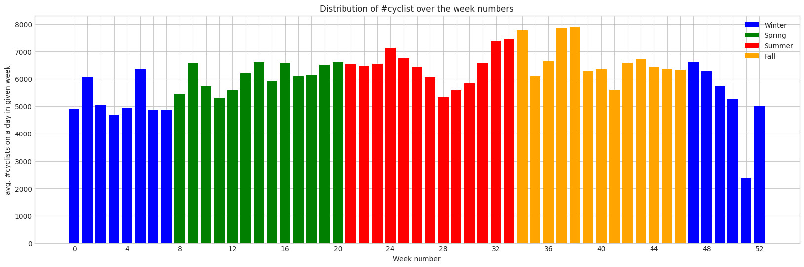

When do people bicycle the most?
In this first part, we'll begin by looking into the temporal patterns of the data in order to observe patterns in the data as well as investigate our initial expectations, such as:
- Weekdays busiest hours, will be 8am and 16am.
- Weekend nights will be busier than usual.
- Traffic will be towards the city in the morning.
- People ride less during the winter.
- Bicycle users' number has increased over time
Hourly patterns
We began by investigating the hourly patterns. This quickly revealed that on average for all locations, the two most traffic-heavy hours are from 08-09 and from 16-17. In the figure below, we see the average number of bicycles per hour of the day. There are three viewing options, where you by toggling 'Total' can see this pattern.
This was also what you would expect as this fits well with the general patterns in the danish society, where lots of people go to and from work, school institutions, etc. during these hours.
But where is everyone heading to? By selecting only one of the other two categories, you can inspect the cyclists going towards the city center or those going away from it. Here things become more interesting, as we see similar patterns to the total distribution, which was not what we expected! For example, when just looking at a single direction for Dronnings Louises Bro, we see a quite salient pattern when inspecting a single direction. This could imply that the direction (of whether people primarily go towards or away from the city), is very dependent on the specific location.
By moving the slider on the interactive map to the right, we can view the direction of traffic on the bike lanes throughout the day. The color of the bubbles in each location shows whether the dominating direction is towards or away from the center of Copenhagen.
And the size tells "how dominating" either direction is - i.e. the larger the buble, the more the traffick is headed in one direction over the other, whereas small bubles indicate similar amount of traffic in each direction. Note that you can click on any location to show the selected bubble's street name.
From this interactive map it is visible that our new hypothesis from inspecting the plot of Dr. Louises Bro was true. Although the overall traffic around Copenhagen is not dominated by traffic either towards or away from the center - the traffic at each location is typically dominated in each directions at different locations during rush hour around Copenhagen. Moreover, note that if one direction dominated in the morning, typically, the other direction dominated in the afternoon as the bubbles' colors switches!
Weekly patterns
During the week though, the scene changes. By exploring the data we came to an obvious, yet fun fact. As seen bellow, Danes seem to bicycle more on some days compared to others based on the 13 measured roads. As expected during the week the patterns are pretty similar, but on Friday afternoons, things slightly change. From the change in the distribution (see circle in plot), it looks like people either leave work earlier, or they choose to stay for a beer and socialize at the company's Friday bar!

If we for a moment just focus on the nights hours of the week (the red bars in the figure), we can recognize an expected pattern where we see that there in general seem to be more activity on the nights of the weekend. This peaked our curiosity in order to see where people are typically headed during the night hours.
Folium plot 2
COMMENT ON FOLIUM PLOT
Monthly patterns
Now, let's widen the time-perspective and look at the monthly and seasonal patterns. We want to address the question of whether the month or the different seasons, have an impact on how many people choose to use their bikes. In the next plot, it appears that the weeks in December in general have more passing cyclists than other winter months, except from week 51. But this also makes great sense since it is Christmas week, where it is expected that a lot of people travel for the hollidays, while schools, universities and several companies are closed. This might also explain why we also see a similar decrease in July (weeks 27-29) as these are common weeks for travelling abroad for the summer holidays (in the pre-Covid19 era). To conclude, it seems reasonable to hypothesise that there could be a connection to the weather conditions, which we will investigate in the next section. But before we do that, we want to see how patterns develop over the years.
